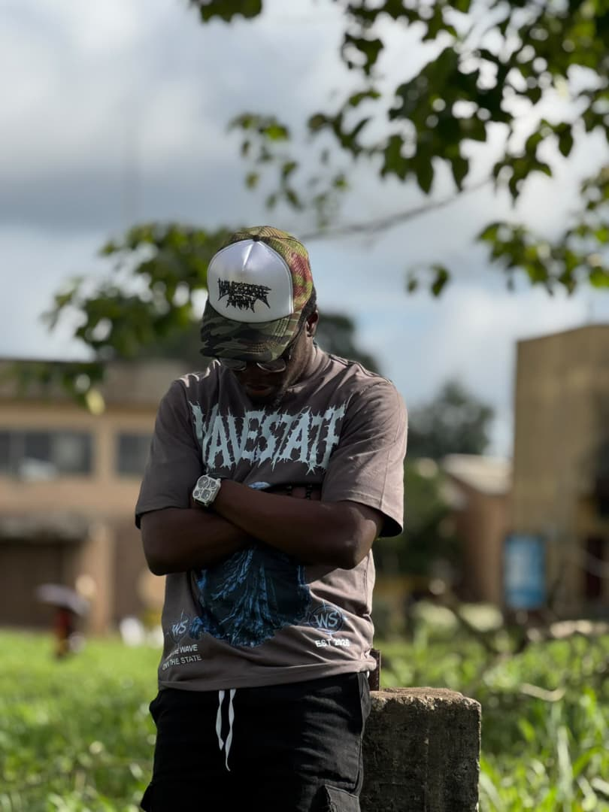

OUR BEGINNING
A vision becomes a beginning.
Every great movement begins with an idea, a vision, and the courage to bring something different into existence. For WAVESTATE, that journey officially began on 25th April 2026 the day a vision became the foundation of a growing streetwear identity.
Built on the belief that fashion is more than clothing, WAVESTATE was established to represent individuality, confidence, creativity, and the freedom to express oneself without limitations.
From the beginning, the goal was clear: to create a brand with its own identity, a distinctive voice, and a presence that stands apart from the ordinary. WAVESTATE was never intended to be just another name in fashion; it was created to represent a mindset, one that encourages people to embrace who they are, trust their individuality, and move to the rhythm of their own lives.
THE JOURNEY SO FAR
Every design moves us forward.
Since its foundation, WAVESTATE has been developing its identity through distinctive designs, signature branding, and a growing vision for modern streetwear. From tees and tops to caps, bottoms, and statement pieces, each part of the brand reflects the ambition to build something recognisable, meaningful, and lasting.
Every design represents another step in the journey. Every collection is an opportunity to communicate the brand's identity. Every challenge presents a chance to improve, evolve, and move closer to the bigger picture.
The journey is about more than producing clothes. It is about building a name, creating a community, earning recognition, and laying the groundwork for a brand that can grow beyond its beginnings.
ACHIEVEMENT, GROWTH & BREAKTHROUGH
Progress is the breakthrough.
For WAVESTATE, achievement is not measured by a single moment. It is measured by progress, transforming an idea into a brand, developing a recognisable visual identity, creating original product concepts, and turning ambition into something people can see, wear, and connect with.
Every step forward brings the brand closer to its greater vision. Each new design, each improvement, and each connection with its audience contributes to a foundation for future success.
The greatest breakthrough is the ability to take a vision that once existed only as an idea and begin giving it a real identity in the world of fashion.
WAVESTATE recognises that success is a journey, not a destination. The ambition is to keep pushing boundaries, refining its craft, expanding its collections, and building a name that stands for originality and consistency.
The story is still unfolding, and the journey ahead holds the promise of greater opportunities, stronger connections, and new milestones.
OUR PHILOSOPHY
Ride the wave,
Own the state.
This is more than a slogan. It represents the spirit behind WAVESTATE.
To ride the waves is to embrace change, move with confidence, and make the most of every opportunity. To never camp is to refuse to remain stagnant, settle for less than your potential, or allow the world to define your direction.
WAVESTATE stands for those who choose their own path, express themselves boldly, and understand that originality will always have a place of its own.
We believe that style should tell a story, identity should carry meaning, and progress should never stop.
THE VISION AHEAD
Built for what comes next.
WAVESTATE was founded with a vision that reaches beyond its starting point. The ambition is to establish a respected streetwear label known for distinctive designs, quality, creativity, and a strong brand identity.
From its beginnings on 25th April 2026 to the milestones yet to come, WAVESTATE is committed to growing with purpose, evolving with creativity, and staying true to the identity that started it all.
The destination is bigger than the beginning. The vision is bigger than the present. And the journey is far from over.
THIS IS WAVESTATE®
A vision turned into a name.
A name growing into an identity.
An identity building toward a legacy.
Founded on 25th April 2026. Built on originality. Driven by ambition.
The waves will change. The vision will grow. The movement will continue.
Explore the collection ↗WAVESTATE — RIDE THE WAVE, OWN THE STATE.